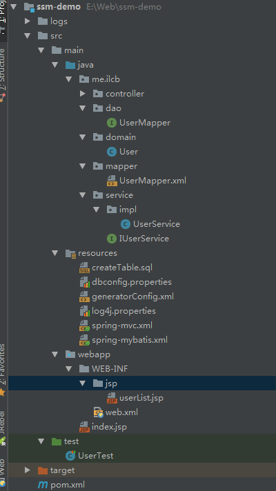
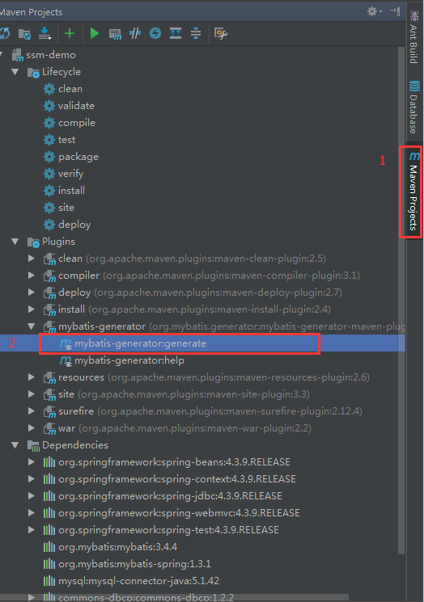
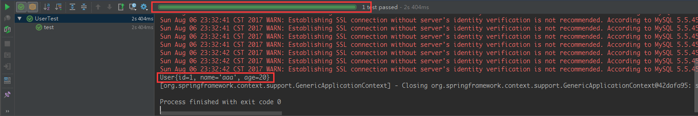
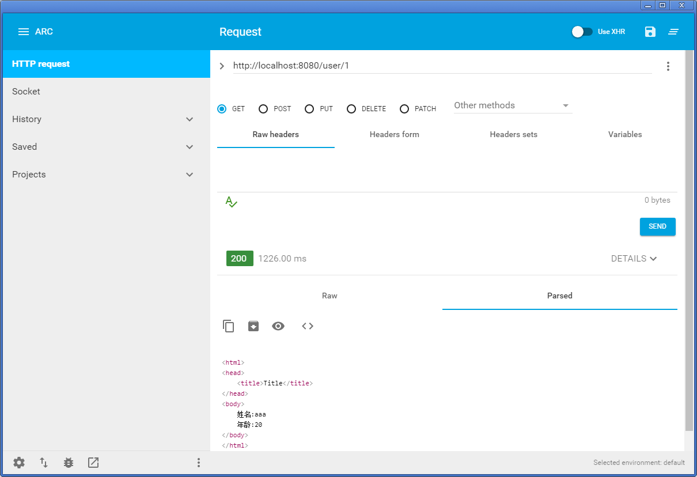

基本概念
Spring
Spring 是一个轻量级的控制反转（IoC）和面向切面（AOP）的容器框架。
SpringMVC
Spring MVC 属于 SpringFrameWork 的 MVC 组件。Spring MVC 分离了控制器、模型对象、视图等角色。
MyBatis
MyBatis 是一个基于 Java 的持久层框架，提供的持久层框架包括 SQL Maps 和 Data Access Objects（DAO），MyBatis 消除了几乎所有的 JDBC 代码和参数的手工设置以及结果集的检索。MyBatis 使用简单的 XML 或注解用于配置和原始映射，将接口和 Java 的 POJOs（Plain Old Java Objects，普通的 Java 对象）映射成数据库中的记录。
SSM 整合
配置文件
- dbconfig.properties：数据源配置信息
- spring-mybatis.xml：Spring 整合 Mybatis 配置文件
- spring-mvc.xml：SpringMVC 配置
工程目录

pom.xml
<project xmlns="http://maven.apache.org/POM/4.0.0" xmlns:xsi="http://www.w3.org/2001/XMLSchema-instance"
xsi:schemaLocation="http://maven.apache.org/POM/4.0.0 http://maven.apache.org/maven-v4_0_0.xsd">
<modelVersion>4.0.0</modelVersion>
<groupId>me.ilcb.web</groupId>
<artifactId>ssm-demo</artifactId>
<packaging>war</packaging>
<version>1.0-SNAPSHOT</version>
<name>ssm-demo</name>
<url>http://maven.apache.org</url>
<properties>
<spring.version>4.3.9.RELEASE</spring.version>
<mybatis.version>3.4.4</mybatis.version>
<mybatis.spring.version>1.3.1</mybatis.spring.version>
<mysql.version>5.1.42</mysql.version>
<commons.dbcp.version>1.2.2</commons.dbcp.version>
<log4j.version>1.2.17</log4j.version>
</properties>
<dependencies>
<!--Spring 相关jar包-->
<dependency>
<groupId>org.springframework</groupId>
<artifactId>spring-beans</artifactId>
<version>${spring.version}</version>
</dependency>
<dependency>
<groupId>org.springframework</groupId>
<artifactId>spring-context</artifactId>
<version>${spring.version}</version>
</dependency>
<dependency>
<groupId>org.springframework</groupId>
<artifactId>spring-jdbc</artifactId>
<version>${spring.version}</version>
</dependency>
<dependency>
<groupId>org.springframework</groupId>
<artifactId>spring-webmvc</artifactId>
<version>${spring.version}</version>
</dependency>
<dependency>
<groupId>org.springframework</groupId>
<artifactId>spring-test</artifactId>
<version>${spring.version}</version>
</dependency>
<!-- Mybatis 相关jar包-->
<dependency>
<groupId>org.mybatis</groupId>
<artifactId>mybatis</artifactId>
<version>${mybatis.version}</version>
</dependency>
<dependency>
<groupId>org.mybatis</groupId>
<artifactId>mybatis-spring</artifactId>
<version>${mybatis.spring.version}</version>
</dependency>
<!-- Mysql 相关jar包-->
<dependency>
<groupId>mysql</groupId>
<artifactId>mysql-connector-java</artifactId>
<version>${mysql.version}</version>
</dependency>
<!-- dbcp数据源jar包-->
<dependency>
<groupId>commons-dbcp</groupId>
<artifactId>commons-dbcp</artifactId>
<version>${commons.dbcp.version}</version>
</dependency>
<!-- log4j配置 -->
<dependency>
<groupId>log4j</groupId>
<artifactId>log4j</artifactId>
<version>${log4j.version}</version>
</dependency>
<dependency>
<groupId>junit</groupId>
<artifactId>junit</artifactId>
<version>4.12</version>
<scope>test</scope>
</dependency>
</dependencies>
<build>
<finalName>ssm-demo</finalName>
<plugins>
<!-- Mybatis Generator插件，可自动生成mybatis相关配置-->
<plugin>
<groupId>org.mybatis.generator</groupId>
<artifactId>mybatis-generator-maven-plugin</artifactId>
<version>1.3.5</version>
<configuration>
<configurationFile>src/main/resources/generatorConfig.xml</configurationFile>
<overwrite>true</overwrite>
</configuration>
<dependencies>
<dependency>
<groupId>org.mybatis.generator</groupId>
<artifactId>mybatis-generator-core</artifactId>
<version>1.3.2</version>
</dependency>
</dependencies>
</plugin>
</plugins>
<!-- 编译时将xml等配置文件一起拷贝到class目录下-->
<resources>
<resource>
<directory>src/main/resources</directory>
<includes>
<include>**/*.properties</include>
<include>**/*.xml</include>
</includes>
</resource>
<resource>
<directory>src/main/java</directory>
<includes>
<include>**/*.properties</include>
<include>**/*.xml</include>
</includes>
</resource>
</resources>
</build>
</project>
Spring 整合 Mybatis
数据源配置
新建 dbconfig.properties，内容如下：
driverClass=com.mysql.jdbc.Driver
url=jdbc:mysql://localhost:3306/ssm
username=root
password=root
initialSize=10
maxActive=10
maxIdle=10
maxWait=50000
整合 spring 和 mybatis
新建 spring-mybatis.xml，用来完成自动扫描，自动注入，配置数据源。
<?xml version="1.0" encoding="UTF-8"?>
<beans xmlns="http://www.springframework.org/schema/beans"
xmlns:context="http://www.springframework.org/schema/context"
xmlns:xsi="http://www.w3.org/2001/XMLSchema-instance"
xsi:schemaLocation="http://www.springframework.org/schema/beans
http://www.springframework.org/schema/beans/spring-beans.xsd
http://www.springframework.org/schema/context
http://www.springframework.org/schema/context/spring-context.xsd">
<!-- 自动扫描 -->
<context:component-scan base-package="me.ilcb.service"/>
<!-- 配置文件 -->
<bean id="propertyPlaceholderConfigurer" class="org.springframework.beans.factory.config.PropertyPlaceholderConfigurer">
<property name="locations">
<list>
<value>classpath:dbconfig.properties</value>
</list>
</property>
</bean>
<!-- 数据源配置 -->
<bean id="dataSource" class="org.apache.commons.dbcp.BasicDataSource">
<property name="driverClassName" value="${driverClass}"/>
<property name="url" value="${url}"/>
<property name="username" value="${username}"/>
<property name="password" value="${password}"/>
<!-- 初始化连接大小 -->
<property name="initialSize" value="${initialSize}"/>
<!-- 连接池最大数量 -->
<property name="maxActive" value="${maxActive}"/>
<!-- 连接池最大空闲 -->
<property name="maxIdle" value="${maxIdle}"/>
<!-- 获取连接最大等待时间 -->
<property name="maxWait" value="${maxWait}"/>
</bean>
<!-- spring和MyBatis整合，不需要mybatis的配置映射文件 -->
<bean id="sqlSessionFactory" class="org.mybatis.spring.SqlSessionFactoryBean">
<property name="dataSource" ref="dataSource"/>
<!-- 自动扫描mapping.xml文件-->
<property name="mapperLocations" value="classpath:me/ilcb/mapper/*.xml"/>
</bean>
<!--DAO接口所在包，spring自动查找其下的dao-->
<bean class="org.mybatis.spring.mapper.MapperScannerConfigurer">
<property name="basePackage" value="me.ilcb.dao"/>
<property name="sqlSessionFactoryBeanName" value="sqlSessionFactory"/>
</bean>
<!-- 事务管理-->
<bean id="transactionManager" class="org.springframework.jdbc.datasource.DataSourceTransactionManager">
<property name="dataSource" ref="dataSource"/>
</bean>
</beans>
log4j.properties
#定义LOG输出级别
log4j.rootLogger=INFO,Console,File
#定义日志输出目的地为控制台
log4j.appender.Console=org.apache.log4j.ConsoleAppender
log4j.appender.Console.Target=System.out
#可以灵活地指定日志输出格式，下面一行是指定具体的格式
log4j.appender.Console.layout = org.apache.log4j.PatternLayout
log4j.appender.Console.layout.ConversionPattern=[%c] - %m%n
#文件大小到达指定尺寸的时候产生一个新的文件
log4j.appender.File = org.apache.log4j.RollingFileAppender
#指定输出目录
log4j.appender.File.File = logs/ssm.log
#定义文件最大大小
log4j.appender.File.MaxFileSize = 10MB
# 输出所以日志，如果换成DEBUG表示输出DEBUG以上级别日志
log4j.appender.File.Threshold = ALL
log4j.appender.File.layout = org.apache.log4j.PatternLayout
log4j.appender.File.layout.ConversionPattern =[%p] [%d{yyyy-MM-dd HH\:mm\:ss}][%c]%m%n
测试
新建表 user
CREATE TABLE `user` (
`id` int(11) NOT NULL AUTO_INCREMENT,
`name` varchar(12) DEFAULT NULL,
`age` int(3) DEFAULT NULL,
PRIMARY KEY (`id`)
) ENGINE=InnoDB DEFAULT CHARSET=utf8;
用 Mybatis Generator 生成 mybatis 配置相关文件
<?xml version="1.0" encoding="UTF-8" ?>
<!DOCTYPE generatorConfiguration PUBLIC
"-//mybatis.org//DTD MyBatis Generator Configuration 1.0//EN"
"http://mybatis.org/dtd/mybatis-generator-config_1_0.dtd" >
<generatorConfiguration>
<!-- 数据库驱动位置 -->
<classPathEntry location="E:\repository\mysql\mysql-connector-java\5.1.42\mysql-connector-java-5.1.42.jar"/>
<context id="context" targetRuntime="MyBatis3">
<commentGenerator>
<property name="suppressAllComments" value="false"/>
<property name="suppressDate" value="true"/>
</commentGenerator>
<!-- 数据库连接 -->
<jdbcConnection driverClass="com.mysql.jdbc.Driver" connectionURL="jdbc:mysql://localhost:3306/ssm" userId="root" password="root"/>
<javaTypeResolver>
<property name="forceBigDecimals" value="false"/>
</javaTypeResolver>
<!-- 生成的model配置 -->
<javaModelGenerator targetPackage="me.ilcb.domain" targetProject="MAVEN">
<property name="enableSubPackages" value="false"/>
<property name="trimStrings" value="true"/>
</javaModelGenerator>
<!-- 生成的mapper.xml配置 -->
<sqlMapGenerator targetPackage="me.ilcb.mapper" targetProject="MAVEN">
<property name="enableSubPackages" value="false"/>
</sqlMapGenerator>
<!-- 生成的dao配置 -->
<javaClientGenerator targetPackage="me.ilcb.dao" targetProject="MAVEN" type="XMLMAPPER">
<property name="enableSubPackages" value="false"/>
</javaClientGenerator>
<!-- 指定那些表要生成配置，%表示所有表 -->
<table tableName="%" enableCountByExample="false" enableDeleteByExample="false" enableSelectByExample="false"
enableUpdateByExample="false"/>
</context>
</generatorConfiguration>
如果是 IntelliJ IDEA，在右侧工具栏中找到 maven，在 maven 中依次打开 Plugins->mybatis-generator，点击 mybatis-generator:generate 进行代码及配置生成：

生成完成后在 target->generated-sources->mybatis-generator 目录下将生成的文件拷贝到项目对应包下：
1.User.java
package me.ilcb.domain;
public class User {
private Integer id;
private String name;
private Integer age;
public Integer getId() {
return id;
}
public void setId(Integer id) {
this.id = id;
}
public String getName() {
return name;
}
public void setName(String name) {
this.name = name == null ? null : name.trim();
}
public Integer getAge() {
return age;
}
public void setAge(Integer age) {
this.age = age;
}
@Override
public String toString() {
return "User{" +
"id=" + id +
", name='" + name + '\'' +
", age=" + age +
'}';
}
}
2.UserMapper.java
package me.ilcb.dao;
import me.ilcb.domain.User;
public interface UserMapper {
int deleteById(Integer id);
int insert(User user);
int insertUser(User user);
User selectById(Integer id);
int updateUserById(User user);
int updateById(User user);
}
3.UserMapper.xml
<?xml version="1.0" encoding="UTF-8" ?>
<!DOCTYPE mapper PUBLIC "-//mybatis.org//DTD Mapper 3.0//EN" "http://mybatis.org/dtd/mybatis-3-mapper.dtd" >
<mapper namespace="me.ilcb.dao.UserMapper">
<resultMap id="BaseResultMap" type="me.ilcb.domain.User">
<id column="id" property="id" jdbcType="INTEGER"/>
<result column="name" property="name" jdbcType="VARCHAR"/>
<result column="age" property="age" jdbcType="INTEGER"/>
</resultMap>
<sql id="Base_Column_List">
id, name, age
</sql>
<select id="selectById" resultMap="BaseResultMap" parameterType="java.lang.Integer">
select
<include refid="Base_Column_List"/>
from user
where id = #{id,jdbcType=INTEGER}
</select>
<delete id="deleteById" parameterType="java.lang.Integer">
delete from user
where id = #{id,jdbcType=INTEGER}
</delete>
<insert id="insert" parameterType="me.ilcb.domain.User">
insert into user (id, name, age)
values (#{id,jdbcType=INTEGER}, #{name,jdbcType=VARCHAR}, #{age,jdbcType=INTEGER})
</insert>
<insert id="insertUser" parameterType="me.ilcb.domain.User">
insert into user
<trim prefix="(" suffix=")" suffixOverrides=",">
<if test="id != null">
id,
</if>
<if test="name != null">
name,
</if>
<if test="age != null">
age,
</if>
</trim>
<trim prefix="values (" suffix=")" suffixOverrides=",">
<if test="id != null">
#{id,jdbcType=INTEGER},
</if>
<if test="name != null">
#{name,jdbcType=VARCHAR},
</if>
<if test="age != null">
#{age,jdbcType=INTEGER},
</if>
</trim>
</insert>
<update id="updateUserById" parameterType="me.ilcb.domain.User">
update user
<set>
<if test="name != null">
name = #{name,jdbcType=VARCHAR},
</if>
<if test="age != null">
age = #{age,jdbcType=INTEGER},
</if>
</set>
where id = #{id,jdbcType=INTEGER}
</update>
<update id="updateById" parameterType="me.ilcb.domain.User">
update user
set name = #{name,jdbcType=VARCHAR},
age = #{age,jdbcType=INTEGER}
where id = #{id,jdbcType=INTEGER}
</update>
</mapper>
新建 UserService 接口及实现类
1.IUserService.java
package me.ilcb.service;
import me.ilcb.domain.User;
public interface IUserService {
int deleteById(Integer id);
int insert(User user);
int insertUser(User user);
User selectById(Integer id);
int updateUserById(User user);
int updateById(User user);
}
2.UserService
package me.ilcb.service.impl;
import me.ilcb.dao.UserMapper;
import me.ilcb.domain.User;
import me.ilcb.service.IUserService;
import org.springframework.beans.factory.annotation.Autowired;
import org.springframework.stereotype.Service;
@Service(value = "userService")
public class UserService implements IUserService {
@Autowired
private UserMapper userMapper;
public int deleteById(Integer id) {
int result = userMapper.deleteById(id);
return result;
}
public int insert(User user) {
int result = userMapper.insert(user);
return result;
}
public int insertUser(User user) {
int result = userMapper.insertUser(user);
return result;
}
public User selectById(Integer id) {
User user = userMapper.selectById(id);
return user;
}
public int updateUserById(User user) {
int result = userMapper.updateUserById(user);
return result;
}
public int updateById(User user) {
int result = userMapper.updateById(user);
return result;
}
}
新建测试类，测试整合是否成功
1.UserTest.java
import me.ilcb.domain.User;
import me.ilcb.service.impl.UserService;
import org.junit.Assert;
import org.junit.Test;
import org.junit.runner.RunWith;
import org.springframework.beans.factory.annotation.Autowired;
import org.springframework.test.context.ContextConfiguration;
import org.springframework.test.context.junit4.SpringJUnit4ClassRunner;
@RunWith(SpringJUnit4ClassRunner.class)
@ContextConfiguration(locations = {"classpath:spring-mybatis.xml"})
public class UserTest {
@Autowired
private UserService userService;
@Test
public void test() {
User user = new User();
user.setName("aaa");
user.setAge(20);
int result = userService.insert(user);
Assert.assertEquals(result, 1);
user = userService.selectById(1);
Assert.assertEquals(user.getName(), "aaa");
System.out.println(user);
}
}
2.运行测试用例，整合成功：

至此 Spring 和 Mybatis 整合成功
整合 SpringMVC
配置 spring-mvc.xml
<?xml version="1.0" encoding="UTF-8"?>
<beans xmlns="http://www.springframework.org/schema/beans"
xmlns:context="http://www.springframework.org/schema/context"
xmlns:mvc="http://www.springframework.org/schema/mvc"
xmlns:xsi="http://www.w3.org/2001/XMLSchema-instance"
xsi:schemaLocation="http://www.springframework.org/schema/beans
http://www.springframework.org/schema/beans/spring-beans.xsd
http://www.springframework.org/schema/context
http://www.springframework.org/schema/context/spring-context.xsd
http://www.springframework.org/schema/mvc
http://www.springframework.org/schema/mvc/spring-mvc.xsd">
<!-- 自动扫描controller -->
<context:component-scan base-package="me.ilcb.controller" />
<!--自动注册DefaultAnnotationHandlerMapping,AnnotationMethodHandlerAdapter,这2个bean是spring MVC为@Controllers分发请求所必须;同时提供数据绑定@NumberFormatannotation支持，@DateTimeFormat支持，@Valid支持，读写XML的支持（JAXB），读写JSON的支持（Jackson）。处理响应ajax请求时，就使用到了对json的支持，在action写JUnit单元测试时，要从spring IOC容器中取DefaultAnnotationHandlerMapping与AnnotationMethodHandlerAdapter来完成测试，<mvc:annotation-driven/>就注册这两个bean。
当需要controller返回一个map的json对象时，可以为<mvc:annotation-driven/>设定<mvc:message-converters>来设定字符集和json处理类，例如： <mvc:annotation-driven>
<mvc:message-converters>
<bean class="org.springframework.http.converter.StringHttpMessageConverter">
<property name="supportedMediaTypes">
<list>
<value>text/plain;charset=UTF-8</value>
</list>
</property>
</bean>
</mvc:message-converters>
</mvc:annotation-driven>-->
<mvc:annotation-driven/>
<!-- 定义视图解析器-->
<bean id="viewResolver" class="org.springframework.web.servlet.view.InternalResourceViewResolver">
<property name="prefix" value="/WEB-INF/jsp/"/>
<property name="suffix" value=".jsp"/>
</bean>
</beans>
配置 web.xml
<!DOCTYPE web-app PUBLIC "-//Sun Microsystems, Inc.//DTD Web Application 2.3//EN"
"http://java.sun.com/dtd/web-app_2_3.dtd" >
<web-app xmlns:xsi="http://www.w3.org/2001/XMLSchema-instance"
xmlns="http://java.sun.com/xml/ns/javaee"
xsi:schemaLocation="http://java.sun.com/xml/ns/javaee http://java.sun.com/xml/ns/javaee/web-app_3_0.xsd"
version="3.0">
<display-name>Archetype Created Web Application</display-name>
<!-- Spring监听器 -->
<listener>
<listener-class>org.springframework.web.context.ContextLoaderListener</listener-class>
</listener>
<context-param>
<param-name>contextConfigLocation</param-name>
<param-value>classpath:spring-mybatis.xml</param-value>
</context-param>
<servlet>
<servlet-name>springMVC</servlet-name>
<servlet-class>org.springframework.web.servlet.DispatcherServlet</servlet-class>
<init-param>
<param-name>contextConfigLocation</param-name>
<param-value>classpath:spring-mvc.xml</param-value>
</init-param>
<load-on-startup>1</load-on-startup>
</servlet>
<servlet-mapping>
<servlet-name>springMVC</servlet-name>
<url-pattern>/</url-pattern>
</servlet-mapping>
</web-app>
在 WEB-INF/jsp/目录下新建 userList.jsp
<%@ page contentType="text/html;charset=UTF-8" language="java" %>
Title
姓名:${user.name}
年龄:${user.age}
新建 UserController.java
package me.ilcb.controller;
import me.ilcb.domain.User;
import me.ilcb.service.impl.UserService;
import org.springframework.beans.factory.annotation.Autowired;
import org.springframework.stereotype.Controller;
import org.springframework.ui.Model;
import org.springframework.web.bind.annotation.PathVariable;
import org.springframework.web.bind.annotation.RequestMapping;
@Controller
@RequestMapping("/")
public class UserController {
@Autowired
private UserService userService;
@RequestMapping(value = "user/{id}")
public String showUsers(@PathVariable Integer id, Model Model) {
User user = userService.selectById(id);
if (user != null) {
Model.addAttribute(user);
}
return "userList";
}
}
部署并访问项目

至此，Spring、SpringMVC、Mybatis 整合全部完成